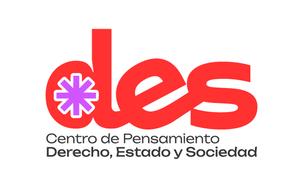
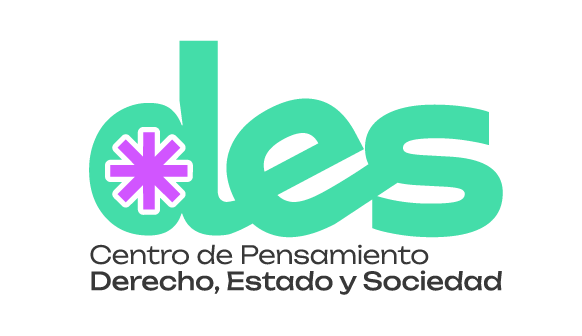
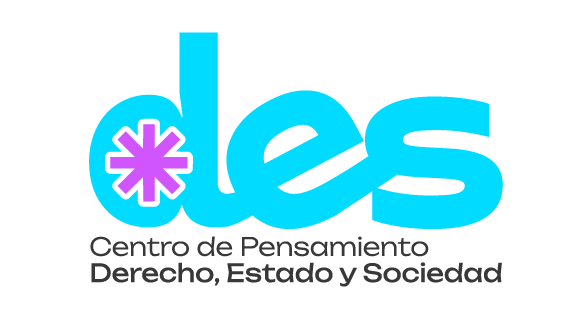
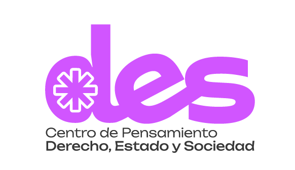

Producción editorial
Series, curaduría académica y publicaciones de acceso abierto.
Traducimos investigación y conocimiento jurídico y sociojurídico en publicaciones, herramientas y conversaciones útiles para la vida social, el territorio y las decisiones públicas.
Explorar publicaciones ↗Una iniciativa adscrita a la Facultad de Derecho y Ciencias Políticas de la Universidad de San Buenaventura Cali, orientada a la divulgación, apropiación y transferencia del conocimiento jurídico y sociojurídico.
El derecho no se agota en la norma: se hace visible en las instituciones, el territorio, los conflictos y las experiencias cotidianas de la sociedad.
Promover la apropiación social del conocimiento producido en investigación y docencia, articulándolo con actores públicos, privados y comunitarios mediante formatos accesibles y con vocación de incidencia.
Consultar presentación institucional ↗De la investigación a la deliberación pública y la transferencia a comunidades e instituciones.
Series, curaduría académica y publicaciones de acceso abierto.
Comunicación jurídica, semilleros, recursos pedagógicos y apropiación del conocimiento.
Cooperación interinstitucional y transferencia en instrumentos aplicables.
Lectura rigurosa de coyunturas, debate y propuestas para problemas públicos.
Comunidad universitaria, entidades estatales, sector privado, gremios, organizaciones sociales, colectivos ciudadanos, centros de investigación y medios.
Pertinencia temática, potencial de transferencia, impacto territorial o poblacional, factibilidad, ética e integridad académica.
Consulta los documentos originales en PDF. Cada publicación incluye su portada auténtica, autoría, serie y enlaces para lectura y descarga.
Conexiones temáticas derivadas de los documentos publicados. Las fichas completas de proyectos podrán añadirse a medida que se validen institucionalmente.
Producción jurídica del espacio, autonomía territorial y decisiones de planeación.
Ver publicaciones relacionadas ↗Calidad regulatoria, competencias, alternativas y evaluación del impacto normativo.
Conocer el Test DES ↗Respuestas jurídicas a coyunturas y efectos territoriales de la acción estatal.
Explorar análisis ↗Estos son ejes de consulta editorial, no un inventario certificado de proyectos en ejecución.
Recursos que convierten hallazgos en rutas de análisis, decisiones y aprendizaje. Incluye un instrumento demostrativo basado en una publicación original.
Valora siete dimensiones con puntajes de 0 (no demostrado), 1 (parcial) y 2 (suficiente). El resultado orienta la deliberación interna; no acredita legalidad ni reemplaza un análisis de impacto normativo o procedimientos obligatorios.
Consultar metodología y advertencias ↗Seleccione una valoración en cada pregunta.
Casos, guías, plantillas y recursos docentes.
Infografías, mapas de proceso y recursos visuales.
Cápsulas, entrevistas y formatos sonoros.
Estas últimas son líneas de producto previstas en la propuesta institucional; no se anuncian aquí recursos que todavía no se han incorporado.
Entrada editorial a la agenda pública del Centro. Las novedades mostradas corresponden a publicaciones documentadas, no a eventos futuros sin confirmar.
Un instrumento de siete preguntas para analizar proyectos regulatorios territoriales.
Leer documento ↗Una lectura jurídica y territorial de los desafíos de la recuperación.
Leer documento ↗La agenda de encuentros y actividades se publicará aquí una vez se confirme la información institucional.
Tres formas de colaborar con el Centro, siguiendo las modalidades descritas en su información institucional.
Para docentes, estudiantes y egresados con interés en proyectos y productos del Centro.
Consultar vinculación ↗Comparte una propuesta editorial, recurso, tema o contribución puntual.
Enviar propuesta ↗Co-diseño de investigaciones, formación, transferencia y espacios de conversación pública.
Proponer alianza ↗Las propuestas se examinan atendiendo su pertinencia, capacidad de generar productos verificables, integridad académica y condiciones de autoría y tratamiento de información. La respuesta y eventual vinculación corresponden al Centro.
Revisar ruta institucional de vinculación ↗Centro de Pensamiento Derecho, Estado y Sociedad · Facultad de Derecho y Ciencias Políticas · Universidad de San Buenaventura Cali.



